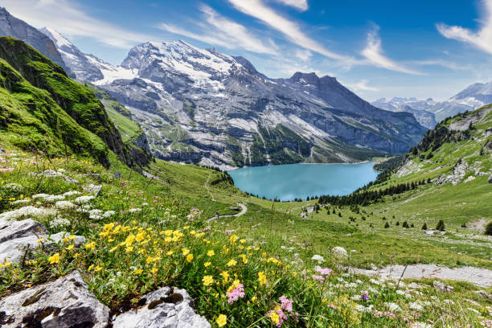

Los Alpes suizos son la región montañosa de Suiza y forman parte de la cordillera de los Alpes que se extiende por Europa.
Ubicación en los Alpes suizos
La parte norte de Suiza se conoce como la meseta suiza. Muchas de las ciudades más grandes de Suiza, como Zúrich, Basilea y Berna, se encuentran en la meseta suiza. Los Alpes suizos se encuentran al sur de la meseta suiza. El límite geográfico entre los Alpes y la meseta se extiende desde Vevey, a orillas del lago Lemán (lago de Ginebra), hasta Rorschach, a orillas del lago de Constanza. Las ciudades de Thun y Lucerna se encuentran en el extremo sur de la meseta suiza, colindando con los Alpes suizos al sur. Las colinas y montañas de menor altitud de Suiza, que se encuentran en las estribaciones de los Alpes, se denominan Prealpes suizos.
Entorno geográfico
Los Alpes suizos se encuentran en una latitud norte que está aproximadamente entre 45° y 47°, una latitud comparable a la entre Minneapolis y Duluth, Minnesota, en los EE. UU.
Importancia geográfica de los Alpes suizos
Desde antes de la época romana, los Alpes suizos han constituido una barrera natural y una división entre el norte y el sur de Europa. Por ello, han desempeñado un papel fundamental en la historia europea. Al mismo tiempo, los pasos de montaña que atraviesan los Alpes suizos han proporcionado importantes rutas comerciales que conectan Italia con los países europeos del norte.
Los Alpes suizos hoy
Hoy en día, la mayoría de los viajeros internacionales que visitan los Alpes suizos vuelan a los aeropuertos de Zúrich o Ginebra y luego viajan en coche, autobús o la excelente red ferroviaria suiza a destinos turísticos populares como Lucerna e Interlaken, puntos de acceso tradicionales a los Alpes suizos. Desde allí, visitan muchos de los centros turísticos de invierno y verano en los valles alpinos de mayor altitud, como Zermatt, Grindelwald y St. Moritz.
Serna Clavijo Juan Camilo